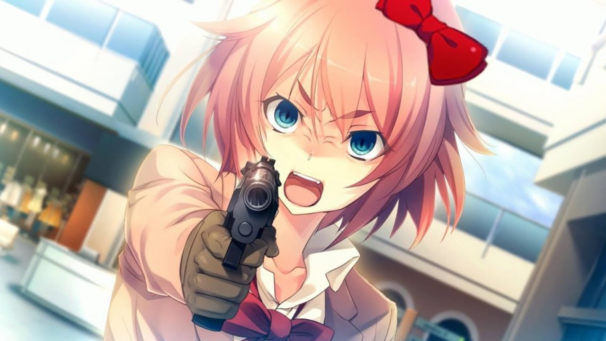

Sayori Shoots Up DDLC
Você já se perguntou o que aconteceria se, em vez de se suicidar, Sayori atacasse a escola? Claro que você tem! Para sua sorte, você não precisa mais esperar, porquê este mod oferece exatamente isso. Veja como Sayori surpreende os membros do clube com seu novo poema, uma espingarda serrada, e se prepara para um bom tempo com um mod que finalmente tem as 3 melhores coisas para diversão: garotas, risadinhas e armas.
⬇ Download